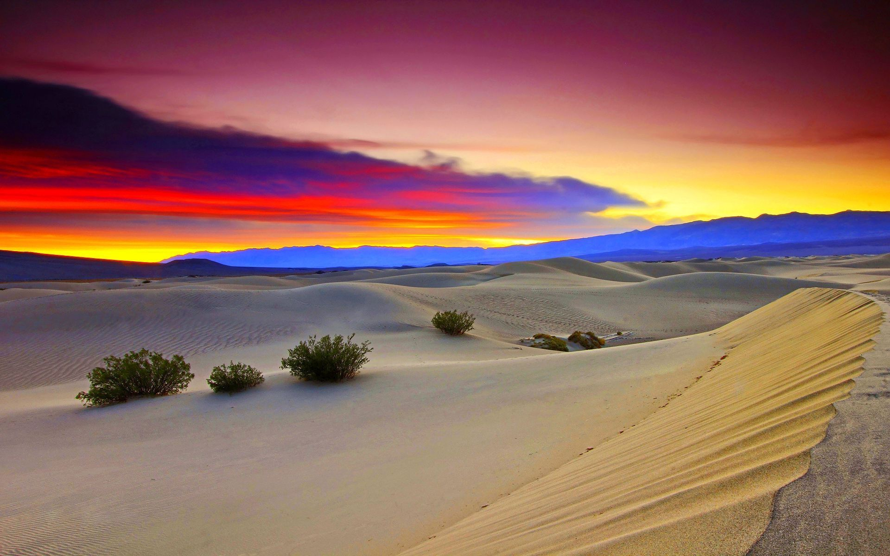
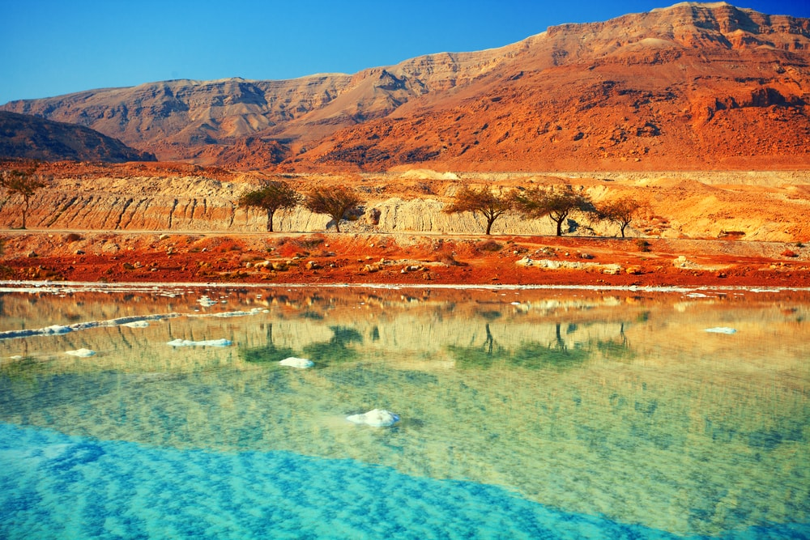

Experiment 2: Living Impressions
Help from Wes's code and ChatGPT.
Description
In this experiment, I am making a generative landscape that will change using random seeds. The landscape is based on 3 images.
 Technical
The system creates shapes using mathmatical equations in p5.js. Mainly there are rectangles, line segments and sine waves that make up the project. There are also user interactions with the mouse where the waves and trees move on the x-axis with the mouse.
Reflection
This project was decently challenging for me as it's not something I was really used to. I used ChatGPT a lot and the source code also helped me. I'm happy with the final project and I think it'll help me later on for other assignments.